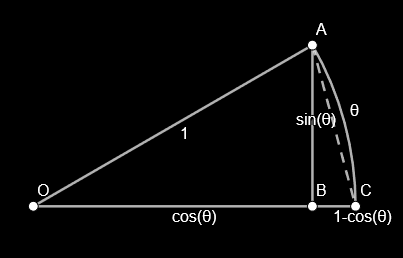

Definition
f is continuous at x=c if \lim\limits_{x\to c}f(x)=f(c)
f is left continuous at x=c if \lim\limits_{x\to c^-}f(x)=f(c)
(c^+ for right)
- removable discontinuity
- \exists\lim\limits_{x\to c}f(x)\neq
f(c)
- jump discontinuity
- \exists\lim\limits_{x\to
c^-}f(x)\neq\lim\limits_{x\to c^+}f(x)
- infinite discontinuity
- \lim\limits_{x\to
c^\pm}f(x)=\pm\infty
Proof
Continuous at a Point
- plugin a in \lim\limits_{x\to a}f(x)=f(a)
- prove \forall\varepsilon>0\enspace\exist\delta>0\text{
st }|x-a|<\delta\Rarr|f(x)-f(a)|<\varepsilon
Continuous on a Domain
- state \lim\limits_{x\to
a}f(x)=f(a),\;\forall a\in\text{Dom}(f)
- prove \forall\varepsilon>0\enspace\exist\delta>0\text{
st }|x-a|<\delta\Rarr|f(x)-f(a)|<\varepsilon
Example ∆
\lim\limits_{x\to a}x^3=a^3\quad\forall
a\in\R \forall\varepsilon>0\enspace\exist\delta>0\text{
st }|x-a|<\delta\Rarr|x^3-a^3|<\varepsilon
- aside |x^3-a^3|=|x-a||x^2+xa+a^2|\le|x-a|(|x|^2+|x||a|+|a|^2)\\
\begin{aligned}
\text{assume }&|x-a|<1\\
\therefore\;&|x|=|x-a+a|\le|x-a|+|a|<1+|a|\quad(\Delta)\\
\end{aligned}\\
\begin{aligned}
\therefore\;|x|^2+|x||a|+|a|^2&\le(1+|a|)^2+\textcolor{aqua}{|a|(1+|a|)}+\textcolor{lime}{|a|^2}\\
&<(1+|a|)^2+\textcolor{aqua}{(1+|a|)^2}+\textcolor{lime}{(1+|a|)^2}\\
&=3(1+|a|)^2\\
\end{aligned}\\
\begin{aligned}
\therefore\;|x-a|(|x|^2+|x||a|+|a|^2)\le|x-a|\cdot3(1+|a|)^2&<\varepsilon\\
|x-a|&<\frac\varepsilon{3(1+|a|)^2}=\delta
\end{aligned}
- proof \text{given
}\varepsilon>0,\text{ let
}\delta=\text{min}\left\{1,\frac\varepsilon{3(1+|a|)^2}\right\}\\
\begin{aligned}
\therefore\;|x-a|<\delta\Rarr|x^3-a^3|=|x-a||x^2+xa+a^2|&<3(1+|a|)^2|x-a|\\
&=3(1+|a|^2)\delta\\
&=\frac{3\varepsilon(1+|a|)^2}{3(1+|a|)^2}=\varepsilon\quad\blacksquare
\end{aligned}
Example |a|/2
\lim\limits_{x\to
a}\frac1x=\frac1a
\forall\varepsilon>0\enspace\exist\delta>0\text{
st
}|x-a|<\delta\Rarr\left|\frac1x-\frac1a\right|<\varepsilon
- aside \left|\frac1x-\frac1a\right|=\frac{|x-a|}{|x||a|}<\varepsilon\Rarr|x-a|<\varepsilon|x||a|\\
\begin{aligned}
\text{assume }|x-a|&<\frac{|a|}2\\
|x|-|a|\le|x-a|&<\frac{|a|}2\\
|x|-|a|&<\frac{|a|}2\\
|x|&<\frac{3|a|}2\\
\end{aligned}\\
\therefore\;|x-a|<\varepsilon|x||a|<\frac{3a^2}2\varepsilon=\delta
- proof \text{given
}\varepsilon>0,\text{ let
}\delta=\text{min}\left\{\frac{|a|}2,\frac{3a^2}2\varepsilon\right\}\\
\therefore\;|x-a|<\delta\Rarr\left|\frac1x-\frac1a\right|=\frac{|x-a|}{|x||a|}<\frac\delta{|x||a|}<\frac{2\delta}{3a^2}=\frac{2(3a^2/2)\varepsilon}{3a^2}=\varepsilon\quad\blacksquare
Continuity of Functions
Constant
\lim\limits_{x\to
c}k=k\qquad\forall\varepsilon>0\enspace\exist\delta>0\text{ st
}0<|x-c|<\delta\Rarr|k-k|<\varepsilon
\text{given
}\varepsilon>0\\|k-k|=0<\varepsilon\quad\blacksquare
Linear
\lim\limits_{x\to c}(mx+b)=mc+b
\forall\varepsilon>0\enspace\exist\delta>0\text{
st }0<|x-c|<\delta\Rarr|(mx+b)-(mc+b)|<\varepsilon
- aside: \begin{aligned}
|(mx+b)-(mc+b)|=|m||x-c|&<\varepsilon\\
|x-c|&<\frac\varepsilon{|m|}=\delta
\end{aligned}
- proof: \begin{aligned}
\text{given }\varepsilon>0\text{ let
}\delta=\frac\varepsilon{|m|}\\
\therefore\;0<|x-c|<\delta\Rarr|(mx+b)-(mc+b)|&=|m||x-c|=|m|\delta\\
&=|m|\frac\varepsilon{|m|}=\varepsilon\quad\blacksquare
\end{aligned}
sin() (Sandwich)
\lim\limits_{x\to c}\sin x=\sin
c

1. prove \lim\limits_{\theta\to0}\sin\theta=0 \begin{aligned}
\because\;&|\text{arc}AC|=\theta\quad|AB|=\sin\theta\\
\therefore\;&0\le|AB|\le|\text{arc}AC|\\
&0\le\sin\theta\le\theta\\
\therefore\;&\lim\limits_{\theta\to0}0\le\lim\limits_{\theta\to0}\sin\theta\le\lim\limits_{\theta\to0}\theta\\
&0\le\lim\limits_{\theta\to0}\sin\theta\le0\\
\therefore\;&\lim\limits_{\theta\to0}\sin\theta=0
\end{aligned} 2. prove \lim\limits_{\theta\to0}\cos\theta=1 \begin{aligned}
\because\;&|AC|^2=|AB|^2+|BC|^2=\sin^2\theta+(1-\cos\theta)^2\\
\therefore\;&|AC|=\sqrt{\sin^2\theta+(1-\cos\theta)^2}=\sqrt{2-2\cos\theta}\\
\because\;&0\le|AC|\le\theta\\
\therefore\;&0\le\sqrt{2-2\cos\theta}\le\theta\\
&-2\le-2\cos\theta\le\theta^2-2\\
&1-\frac{\theta^2}2\le\cos\theta\le1\\
\therefore\;&\lim\limits_{\theta\to0}{1-\frac{\theta^2}2}\le\lim\limits_{\theta\to0}\cos\theta\le\lim\limits_{\theta\to0}1\\
&1\le\lim\limits_{\theta\to0}\cos\theta\le1\\
\therefore\;&\lim\limits_{\theta\to0}\cos\theta=1
\end{aligned} 3. prove \lim\limits_{x\to c}\sin x=\sin c \begin{aligned}
\lim\limits_{x\to c}\sin
x&=\lim\limits_{h\to0}\sin(h+c)=\lim\limits_{h\to0}(\sin h\cos
c+\sin c\cos h)\\
&=0\cdot\cos c+\sin c\cdot1=\sin c\quad\blacksquare
\end{aligned}
Exponential
\lim\limits_{x\to c}e^x=e^c -
prerequisite \begin{aligned}
\lim\limits_{h\to0}(1+h)^{\frac1h}&=\lim\limits_{n\to\infty}(1+\frac1n)^n=e\\
\lim\limits_{h\to0}\frac{e^h-1}h&=1
\end{aligned} - proof \begin{aligned}
\lim\limits_{x\to
c}e^x&=\lim\limits_{h\to0}e^{h+c}=\lim\limits_{h\to0}e^c\cdot\lim\limits_{h\to0}e^h=e^c\lim\limits_{h\to0}\left(\frac{e^h-1}h\cdot
h+1\right)\\
&=e^c(1\cdot0+1)=e^c\quad\blacksquare
\end{aligned}
E/IVT
- Extreme Value
Theorem
if f is
continuous on [a,b]\implies\exist
M,m\in[a,b]\text{ st }f(M) is the max value and f(m) is the min value of f(x) for x\in[a,b]
- Interediate Value
Theorem
if f is
continuous on [a,b]\implies\forall
f(a)<K<f(b)\enspace\exist c\in(a,b)\text{ st }f(c)=K
- f can change sign at x=c\text{ iff }\textcolor{aqua}{f(c)=0}\lor
\textcolor{lime}{f(c)\text{ DNE}}\lor\textcolor{coral}{f(c)\text{
discontinues}}
IVT Proof
\text{let }g(x)=f(x)-K\\
\begin{aligned}
&\therefore\;\forall f(a)<K<f(b)\Rarr\begin{cases}
g(a)=f(a)-K<0\\
g(b)=f(b)-K>0
\end{cases}\\
&\therefore\;\text{(lemma)}\exist c\in(a,b)\text{ st
}g(c)=f(c)-K=0\\
&\therefore\;f(c)=K\quad\blacksquare\\
\end{aligned}
Infimum and Supremum
- for finite sets
- \text{Inf }S=\text{min}\{S_n\}
- \text{Sup }S=\text{max}\{S_n\}
- for infinite sets
- \text{Inf
}S=\lim\limits_{n\to-\infty}S_n
- \text{Sup
}S=\lim\limits_{n\to\infty}S_n
Axioms
every nonempty set of real numbers that is bounded from above has a
Supremum
every nonempty set of real numbers that is bounded from
below has a Infimum
Sup-ε Theorem
let M=\text{Sup }S and \varepsilon>0\quad\therefore\;\exist s\in S\text{
st }M-\varepsilon<s\le M
- proof \begin{aligned}
&\because\;\text{Sup }S=M\\
&\therefore\;s\le M
\end{aligned}\\
\begin{aligned}
\text{assume }&\neg\exist s\in S\text{ st }M-\varepsilon<s\\
\therefore\;&\forall s\in S\enspace s\le M-\varepsilon\\
\therefore\;&\text{Sup }S=M-\varepsilon\\
&\text{contradicts the initial assumption that }\text{Sup }S=M\\
\therefore\;\exist s\in&S\text{ st }M-\varepsilon<s\le M
\end{aligned}
Inf-ε Theorem
let m=\text{Inf }S and \varepsilon>0\quad\therefore\;\exist s\in S\text{
st }m\le s<m+\varepsilon
- proof $$
\begin{aligned}
&\because\;\text{Inf }S=m\\
&\therefore\;s\ge m
\end{aligned}
\
\begin{aligned}
\text{assume }&\neg\exist s\in S\text{ st }s<m+\varepsilon\\
\therefore\;&\forall s\in S\enspace m+\varepsilon\le s\\
\therefore\;&\text{Inf }S=m+\varepsilon\\
&\text{contradicts the initial assumption that }\text{Inf }S=M\\
\therefore\;\exist s\in&S\text{ st }m\le s<m+\varepsilon
\end{aligned}
\